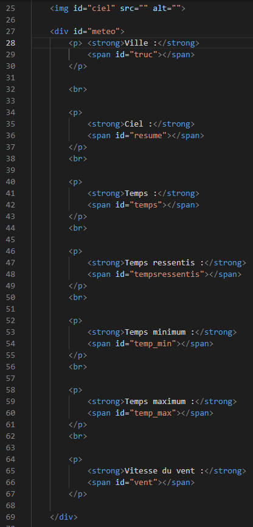
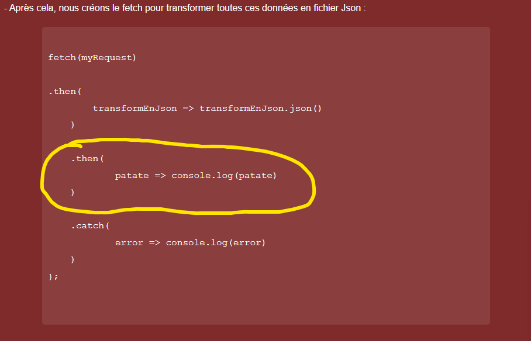

/2022-puppy-walk-animated.gif)
- Copier tout le code HTML ET JavaScriptdu cours Numéro 6.
- Créez dans votre dossier HTML, des éléments de comment vous vouler montrer les informations :
- Personnellement j'ai choisi de faire comme l'idée de Pierre :
- Puis mettez des id pour pouvoir écrire vos informations à l'intérieur dans le JavaScriptgrace à " innertHTML ".
- Vous allez modifier dans le JavaScriptdu cours numéro 6 dans notre fonction " recupererLaMeteoActeulleDeGeoLoc ", l'endroit où vous aller manipuler les informations / les données Json :
- Vous allez modifier le deuxième then par :
traiterData => montrerLaMeteoDeLapi(traiterData) | Qui fera référence à la fonction que l'on crée juste après.
fetch(myRequest)
.then(
transformEnJson => transformEnJson.json()
)
.then(
traiterData => montrerLaMeteoDeLapi(traiterData)
)
.catch(
error => console.log(error)
)
};
- " montrerLaMeteoDeLapi " fera référence à la fonction dans laquelle nous allons mettre nos données du Json dans les span de nos ID corespondant dans le HTML :
- Je crée la fonction montrerLaMeteoDeLapi qui qui traite le json du service de meteo de l'api currentweather :
const montrerLaMeteoDeLapi = (data) => {
// On cible la span ville pour afficher la propriétée name de json
const truc = document.querySelector('#truc');
// On ajoute la ville à l'intérieur
truc.innerHTML = data.name;
const resume = document.querySelector('#resume');
resume.innerHTML = data.weather[0].description;
const temps = document.querySelector('#temps');
temps.innerHTML = Math.trunc(data.main.temp) + '°C';
const tempsressentis = document.querySelector('#tempsressentis');
tempsressentis.innerHTML = Math.trunc(data.main.feels_like) + '°C';
const tempsminimum = document.querySelector('#temp_min');
tempsminimum.innerHTML = Math.trunc(data.main.temp_min) + '°C';
const temp_max = document.querySelector('#temp_max');
temp_max.innerHTML = Math.trunc(data.main.temp_max) + '°C';
const vent = document.querySelector('#vent');
vent.innerHTML = data.wind.speed + ' km/h';
const ciel = document.querySelector('#ciel');
ciel.src = `http://openweathermap.org/img/wn/${data.weather[0].icon}.png`;
}
- J'ai utilisé la fonction : " Math.trunc " pour enlever les décimales car, j'en avais envie.